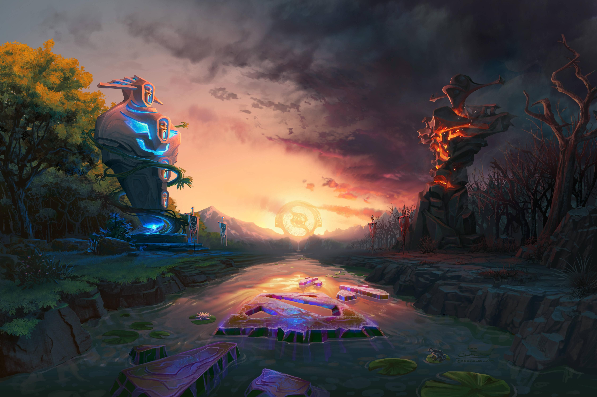
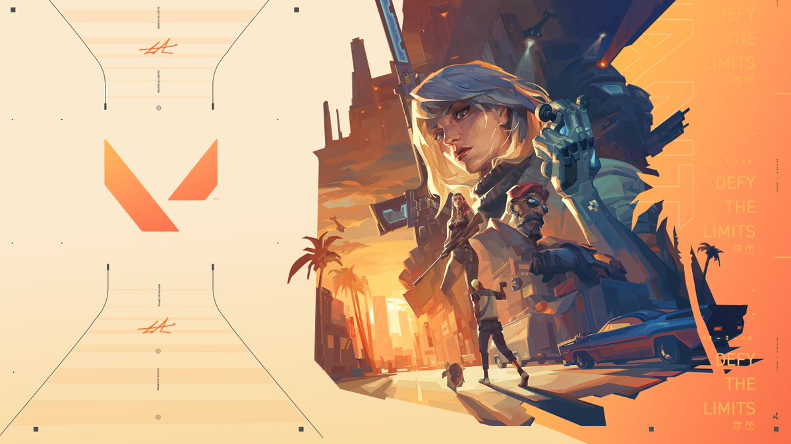
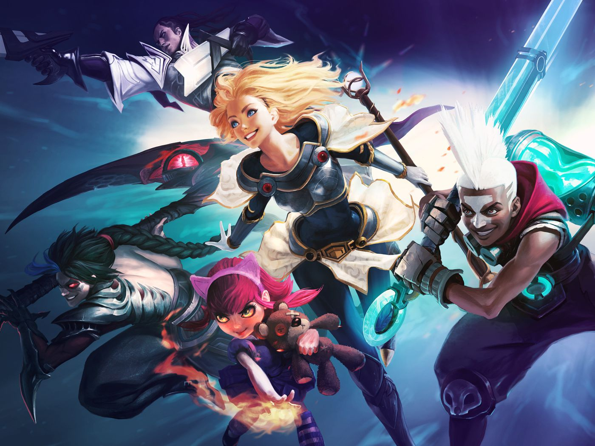
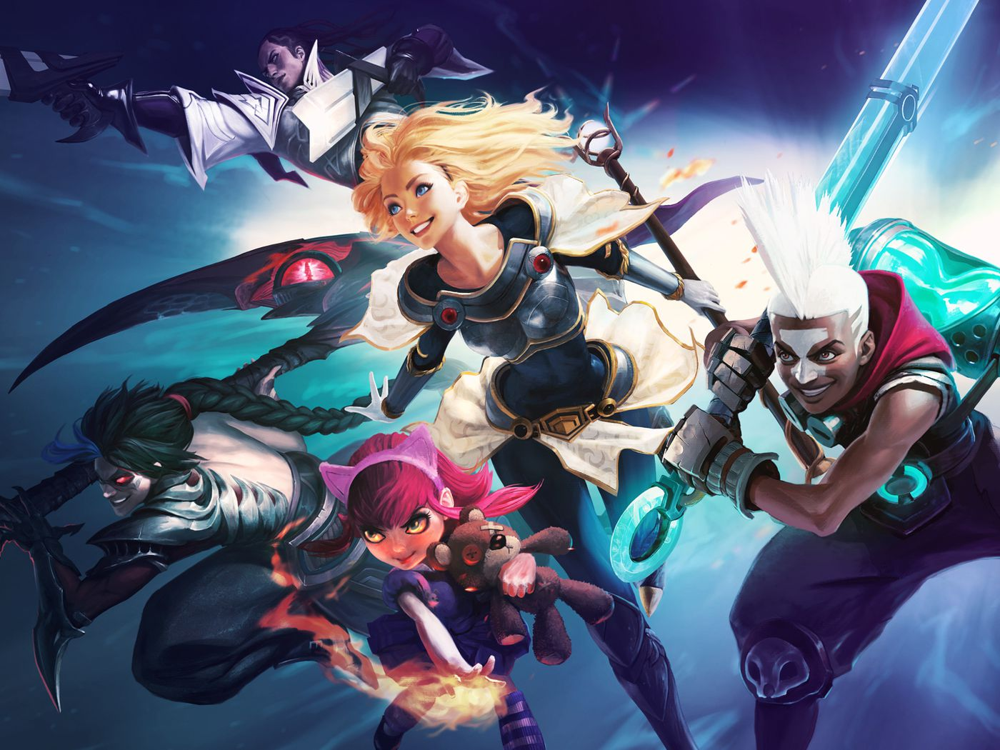
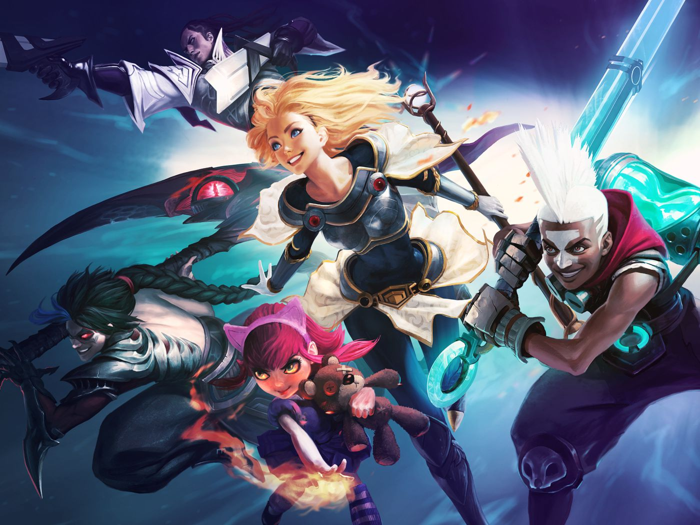
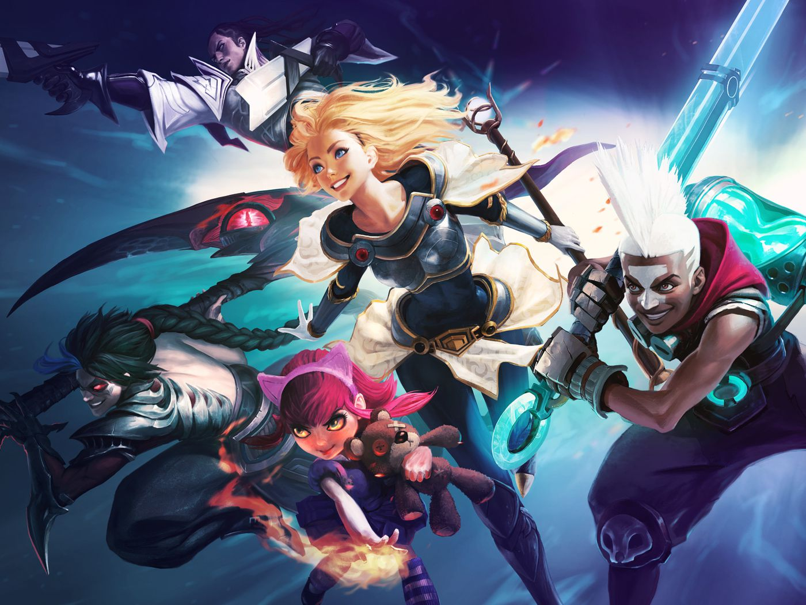

FAVORITE GAMES


 



Greetings! I am King Aguiluz B. Colis, a first-year college student at Ateneo de Naga University. I embarked on the journey of Computer Science with the intent of immersing myself in the intricate world of coding languages, embracing the challenges that come with this dynamic field. As a passionate learner, I am eager to explore various programming languages, seeking to broaden my knowledge and sharpen my problem-solving skills. Beyond the realm of academia, I find solace and excitement in the world of gaming. Games such as Dota 2, Valorant, League of Legends, Counter-Strike Global Offensive 1 and 2.0 have become a significant part of my leisure time. Engaging in these virtual landscapes not only serves as a form of entertainment but also fosters strategic thinking, teamwork, and quick decision-making — skills that complement my academic pursuits. The balance between my academic endeavors and gaming escapades enriches my overall college experience, allowing me to thrive both intellectually and recreationally.

Throughout my gaming journey, I've encountered a multitude of captivating worlds and diverse narratives, each accompanied by a cast of unforgettable heroes and characters. These digital realms have become a canvas for my gaming adventures, and among the myriad of protagonists and allies, a select few have etched a lasting place in my heart as favorites.
LOL: PLATINUM 2
DOTA 2: LEGEND 1
APEX LEGENDS: DIAMOND
VALORANT: DIAMOND 3